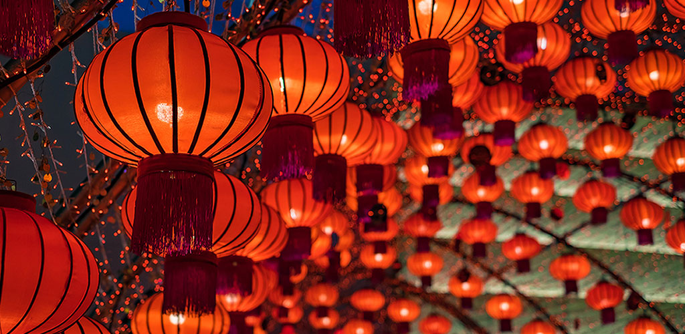
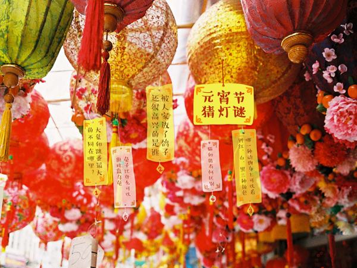
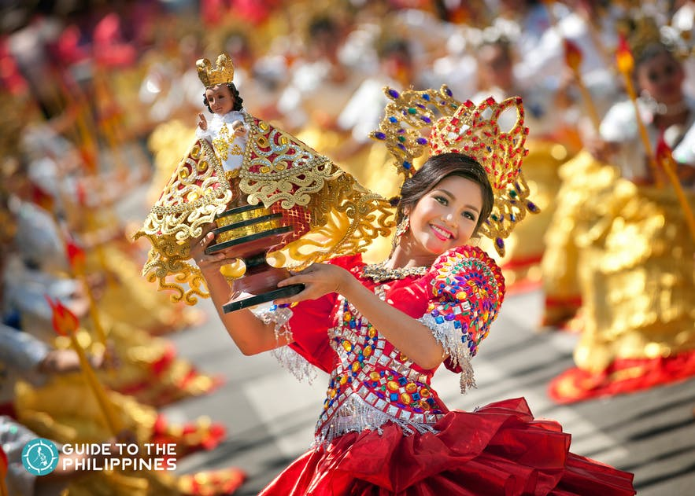
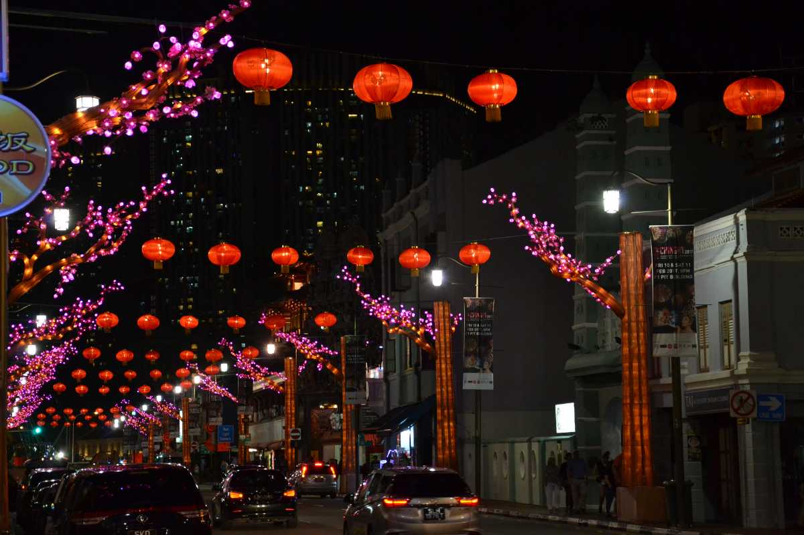
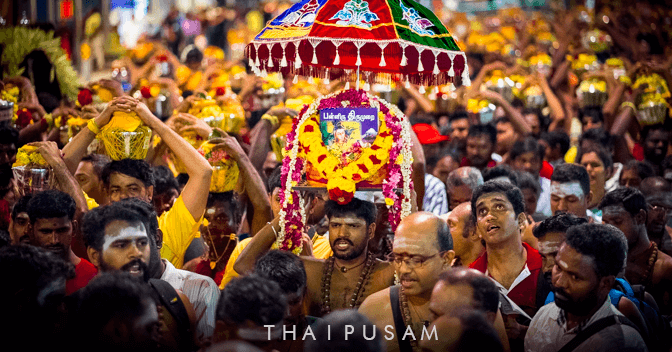

×
Home
Spring
Summer
Fall/Autumn
Winter
Contact Us
☰

China
Chinese Lantern Festival

Lantern Festival is one of the most traditional festivals in China celebrated on the 15th day of the first month of the Chinese lunar year. It is a ‘festival within a festival' that is considered ...
Chinese New Year
The origin of the Spring Festival now is too old to be traced. It is widely believed that the word ‘Nian'(in Chinese means 'year'), was first the name of a monster beast that started to prey on human being at the night ...
Tomb-sweeping Festival
Tomb-sweeping Day, also known as Qing Ming Festival or Pure and Bright Festival, as after this day the weather will become pure and warm in the coming new season.The date of the Tomb-sweeping
Japan
Omizutori
The Omizutori festival, also known as the “sacred water-drawing” festival, takes place over 2 weeks in March, in the city of Nara. The Buddhist festival is a ceremony to cleanse people of their sins and...
Yuki Matsuri
Yuki Matsuri, also known as “Sapporo snow festival”, is held for about a week in Hokkaido. This festivity is one of Japan’s most popular winter events, starting out in 1950 when a group of high-school...
Laos
Elephants Festival
The elephants festival is a two-day celebration organized annually (mid-February) in Xayaboury province. Some 100 elephants and their mahouts from around the area gather to demonstrate...
Philippines
Ati-Atihan Festival
Dubbed as the Mother of All Philippine Festivals, the Ati-Atihan Festival is widely known not just in the Philippines but across the world. Ati-Atihan Festival meaning is “to be like Atis or Aetas...
Sinulog Festival

It also attracts between 1 to 2 million visitors from all over the country every year and gives travelers the opportunity to join Cebu tours to explore the province...
Singapore
Chinese New Year

The first day of Chinese New Year, also known as the Spring Festival in Singapore, falls on the new moon day.The Lunar New Year (as it is also called) is of great significance to the Chinese who clean their homes to get...
Thaipusam Festival

Majority of the devotees who participate in Thaipusam are Hindu Tamils, but it’s not uncommon to find Hindus of other ethnicities taking part in the procession.This is especially true in Singapore,...